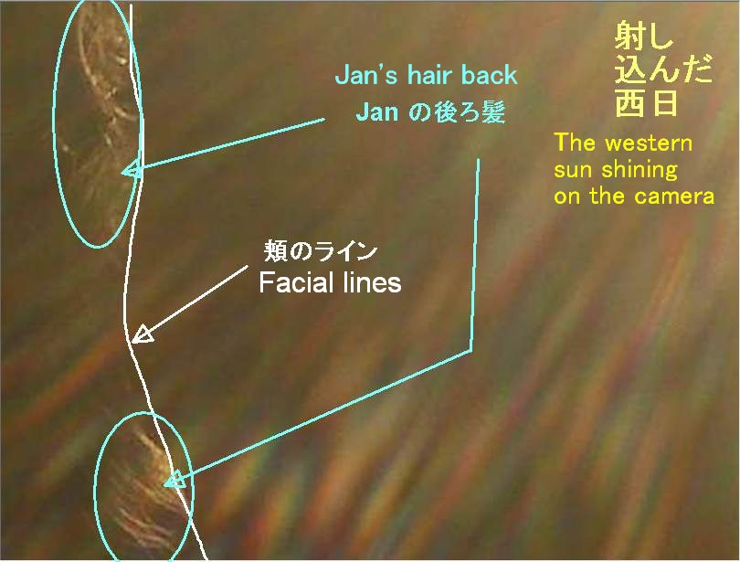
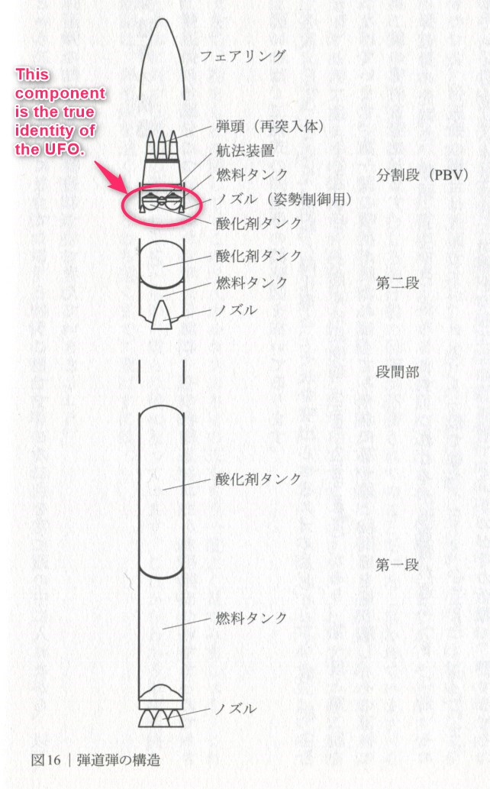
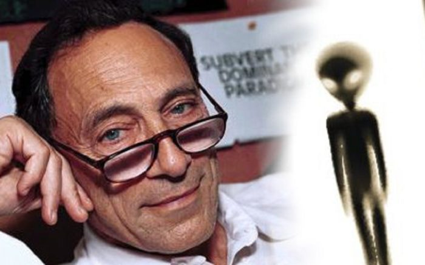
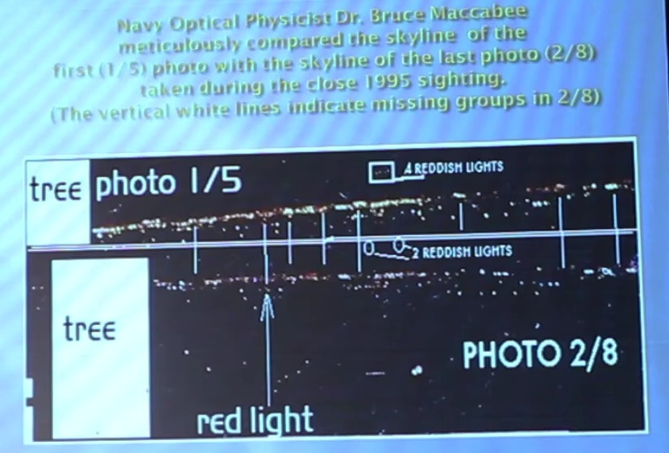
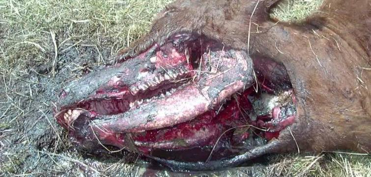

simple version: What UFOs are.
detail version: Solving the mystery
ciger-shaped UFOs photo 
Predator photo 
On Gregory Little's Hypothesis 
Condign report can't explan UFO phenomena
Objectivity should not be applied to UFO/Bigfoot 
Explain why "Oz factor" occurs. 
The identity of the UFO that shot down ICBM 
Explain Why rapid emptying batteries occurs
Kikoura Lights Incident 
The identity of "blue light" associated with UFO/ET/Bigfoot 
"blue light" causing brain damage and missing-time
This is why not only UFOs, but also Bigfoot/Ghost apparitions, cause stop a car's engine. 
Immediately after Bigfoots appeared, "Shadow People" also appeared, and even a huge triangular UFO appeared → This mystery was solved. 
The consciousness of a person experiencing abduction is not normal. Here is the proof. 
Solving the mystery of the "Kelly-Hopkinsville" alien encounter. 
This is probably the true nature of the missing-time experienced by Betty/Barney Hill. 
(image source : https://www.youtube.com/watch?v=R-bjBj6Nbx8 )
Xendra/Xandra is really a "Fog Dome" 

Here's the real reason why people bring cameras to take pictures, but fail to photograph UFOs
Fallacy of Michael Schratt's claim that "the U.S. government acquired anti-gravity technology in the 1950s. 
(image source: https://www.youtube.com/watch?v=Ki7YkOjVzDg )
Solving the Mystery of Dr. Bruce Maccabee's Officially Approved "Authentic Missing-Time Photographic Evidence" 
Fallacy of Jacques Vallee's hypothesis on UFO/ET
Explain why and how Cattle mutilation occurred. 